Qingdao steht zwischen Meer und Hügeln. Rote Dächer liegen unter grünen Bäumen, alte Straßen steigen langsam nach oben, und am Abend werden die Tische voll.
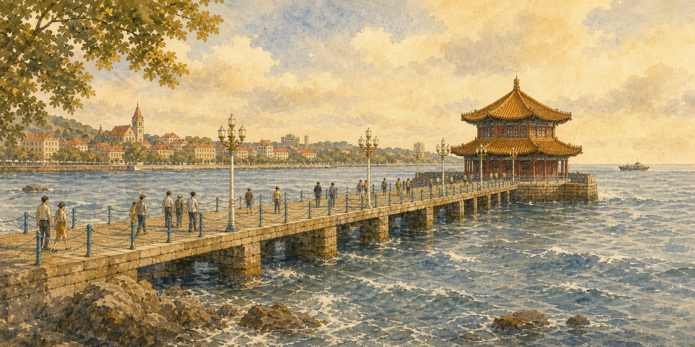
Am Zhanqiao-Pier kommt der Wind vom Meer. Du siehst Wasser, rote Dächer und eine kleine Halle am Ende des Weges. Von hier geht Qingdao langsam nach oben: in Straßen, unter Bäume, zu Bergen und an Tische.
Neun Stationen durch Qingdao: Pier, alte Dächer, die Acht Pässe, eine Kirche am Hang, Laoshan, Segel, das Marinemuseum, Biergeschichte und ein Hafenmarkt.
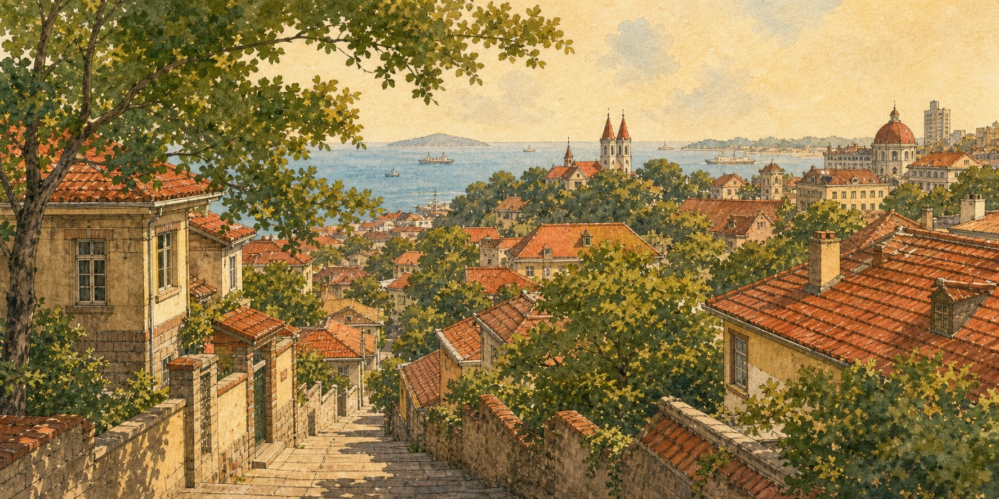
In der Altstadt sind die Straßen nicht gerade. Sie gehen hoch und runter. Zwischen den Bäumen leuchten rote Dächer.
So beginnt das Qingdao-Gefühl: nicht nur Strand, sondern ein Hügel mit Häusern, Schatten und einem kleinen Blick zum Meer.
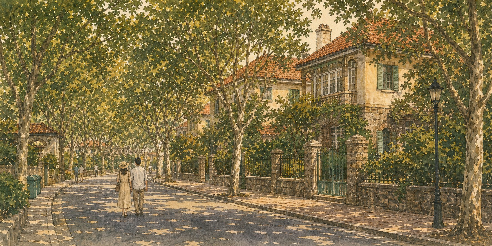
In Badaguan wird Qingdao leiser. Bäume stehen über der Straße. Alte Häuser schauen durch den Schatten.
Badaguan heißt hier auch Acht Pässe. Namen wie Shanhaiguan-Straße und Zhengyangguan-Straße geben dem Viertel den Qingdao-Anker, nicht nur die schönen Bäume.
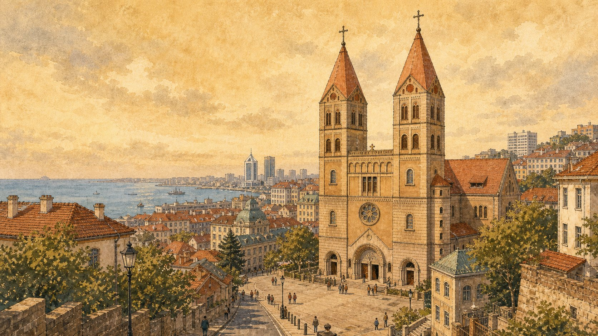
Auf einer alten Straße siehst du zwei Türme. Die Kirche steht nicht allein; sie gehört zur Altstadt und zum Hang.
Die Kirche ist hier kein Europa-Traum. Sie ist eine Schicht der Stadt: Stein, Dach, Straße, Meer und Alltag stehen zusammen.
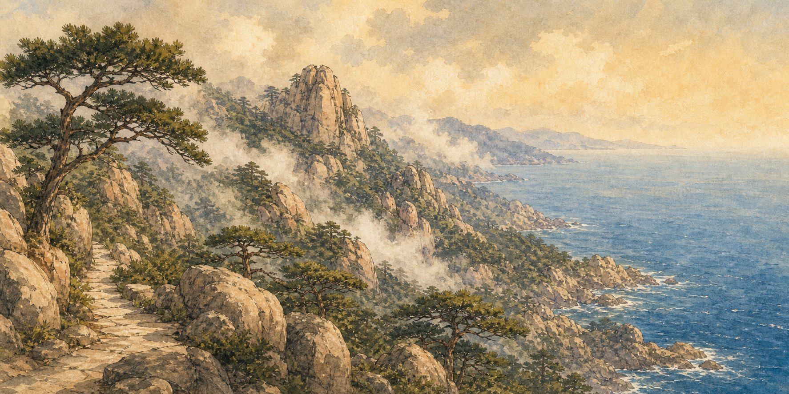
Am Laoshan-Berg ist Qingdao weit. Steine, Kiefern, Wolken und Meer stehen zusammen.
Laoshan macht Qingdao anders als eine einfache Küstenstadt. Hier hört das Meer nicht auf; es trifft auf Felsen und Bergluft.
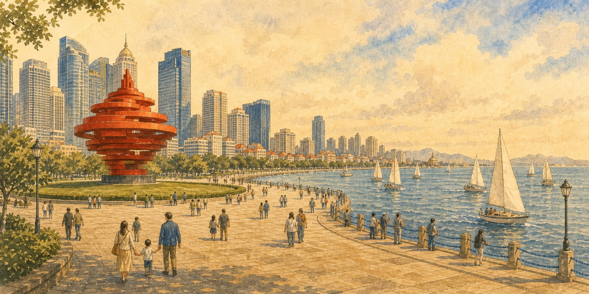
Am Meer steht eine rote Form: der Maiwind. Daneben fahren Segelboote, und der Wind wird modern.
Die rote Skulptur heißt Wuyuefeng, auf Deutsch etwa Maiwind. Sie macht den Platz erkennbar, ohne dass die Seite ein Plakat wird.
Am Meer liegen alte Schiffe. Sie erzählen von der Marine und einer Stadt, die seit hundert Jahren zum Wasser gehört.
Qingdao ist seit über hundert Jahren Marinestadt. Das Museum zeigt echte Schiffe und die Geschichte der chinesischen Marine. Es liegt am Wasser — passend zu einer Stadt, die vom Meer lebt.
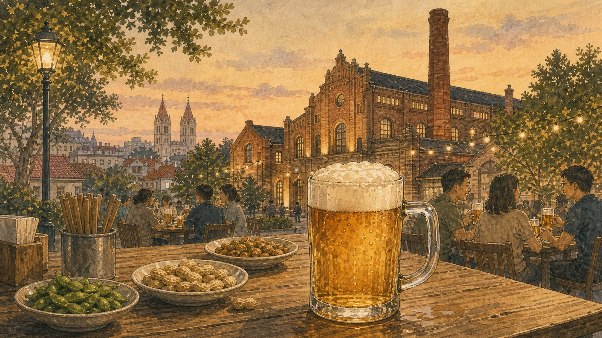
Bier ist in Qingdao Stadtgeschichte. Seit 1903 gehört es zu Fabriken, Sommerabenden und Tischen im Freien.
Hier geht es nicht um Trinken als Werbung. Das Bier bleibt ein Kulturzeichen: ein kaltes Glas, Gespräch, Essen und die Geschichte einer Hafenstadt.
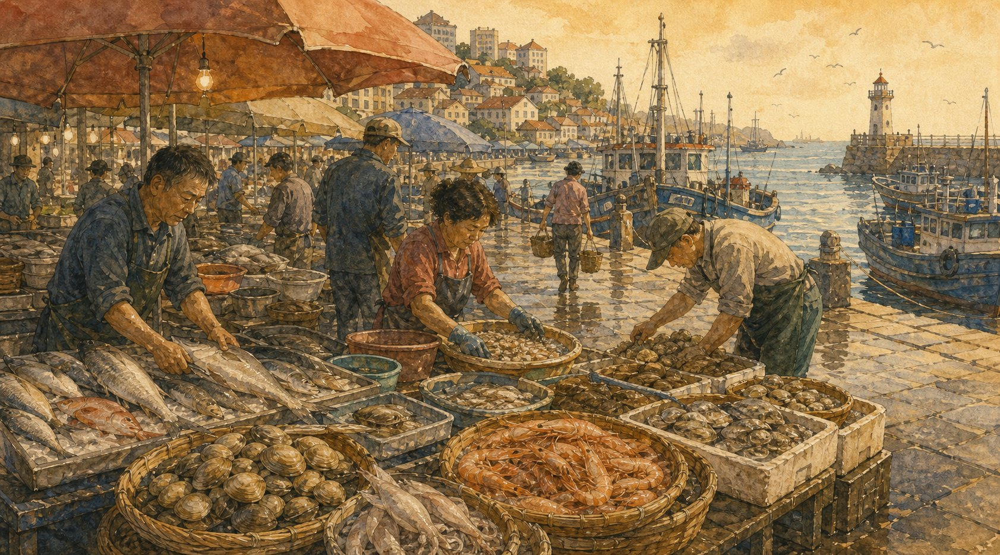
Am Hafen ist Qingdao laut und nah. Muscheln, Fisch und Garnelen liegen auf dem Tisch. Man hört Wasser und Stimmen.
Dieser Ort bringt die Seite zurück zum Alltag. Die Stadt ist nicht nur Aussicht, sondern Arbeit, Geruch, Einkauf und Abendessen.
Qingdao schmeckt heiß, salzig und frisch: Muscheln, ein kaltes Glas, Fischteigtaschen, Meeresnudeln und Tintenfisch vom Grill.
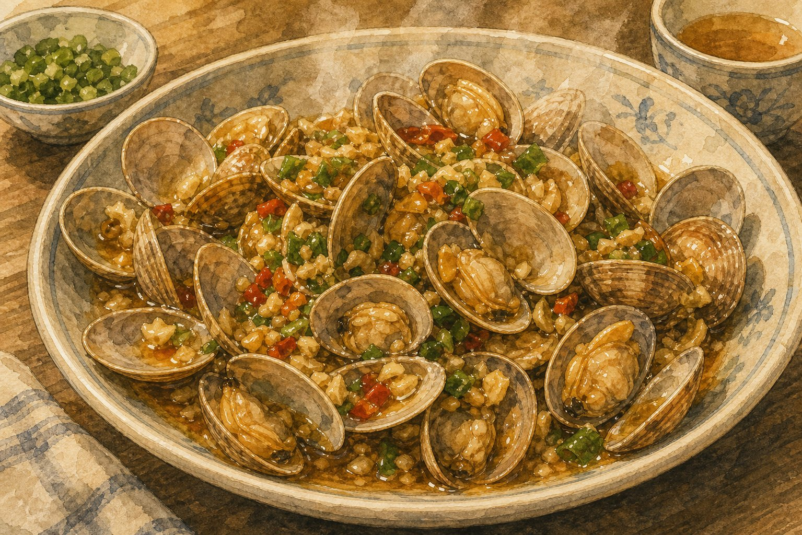
Die Muscheln sind heiß. Knoblauch und Frühlingszwiebeln duften stark.
Das ist der schnelle Qingdao-Tisch: eine große Schale, viel Dampf und der Geschmack vom Meer.
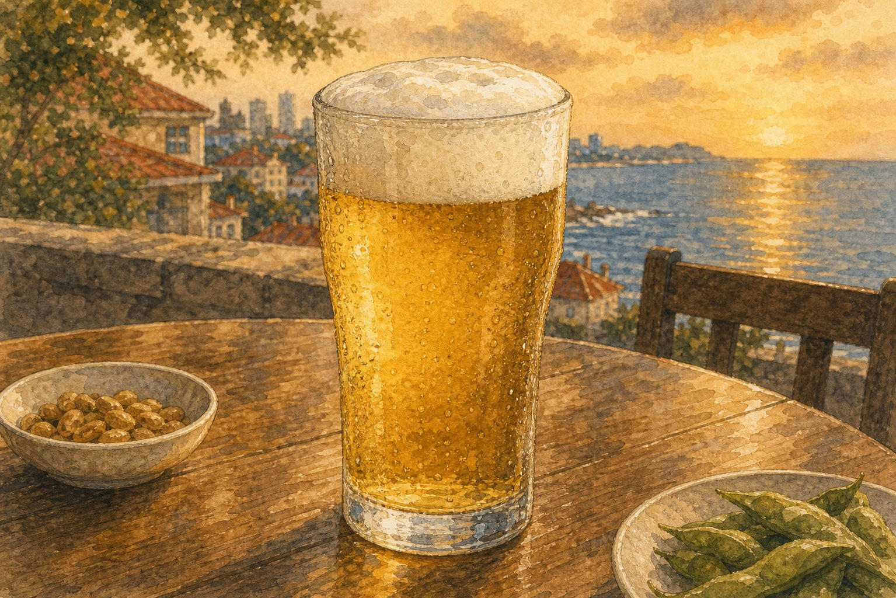
Das Glas ist kalt. Es steht neben kleinen Tellern und gehört zum Abend am Meer.
Die Seite nennt Bier als Kultur und Stadterinnerung, nicht als Aufforderung. Wichtig sind Tisch, Zeit und Gespräch.
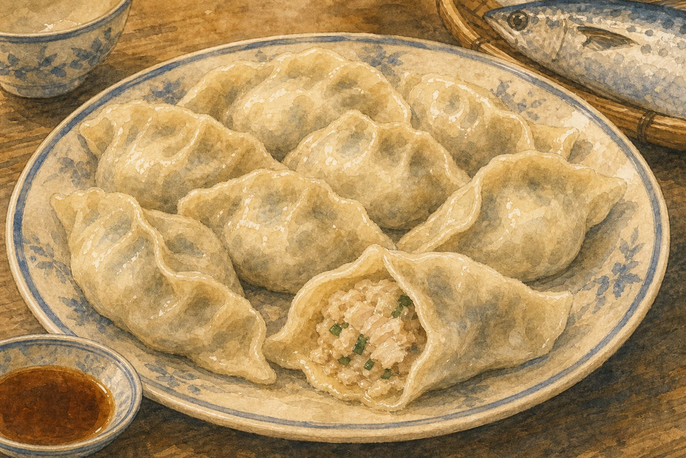
Die Teigtaschen sind weich und salzig. Innen ist Fisch vom Meer.
Makrelen-Teigtaschen verbinden Küste und Nordküche. Es sind nicht nur normale Teigtaschen, sondern ein Qingdao-Anker.
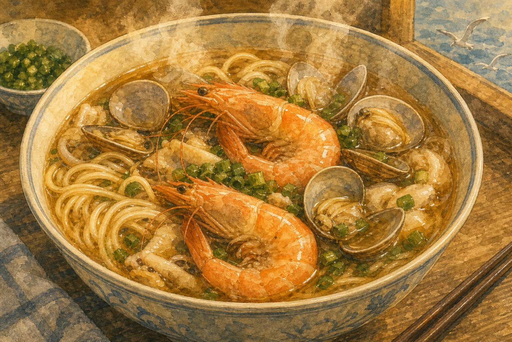
In der Schale liegen Nudeln, Garnelen und Muscheln. Die Brühe ist heiß.
Nach Wind und Straße macht eine warme Schale die Stadt ruhig. Das ist Alltag, nicht nur ein Festessen.
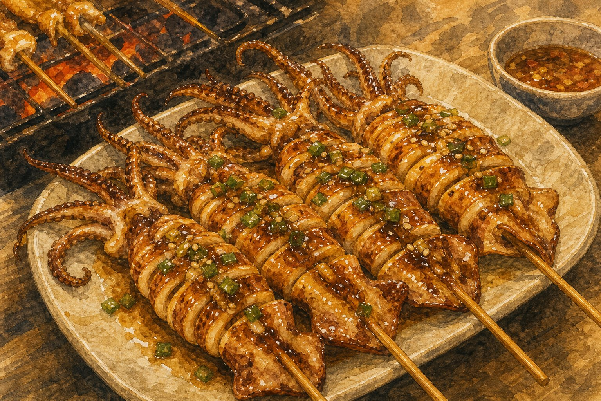
Auf der Straße riecht Tintenfisch nach Feuer. Die Spieße sind warm und würzig.
Am Abend wird Qingdao lebendig: Marktlicht, Meerluft, kleine Stände und Menschen, die langsam nach Hause gehen.
Kurze Wörter für Meer, Straße, Wind, Berg und Essen. Tippen zum Umklappen.
Diese Sätze sind kurz und passen zu Qingdao.
Der Wind kommt vom Meer.风从海上来。
Die roten Dächer liegen unter Bäumen.红色屋顶在树下。
In Badaguan ist es leise.八大关很安静。
Am Laoshan-Berg stehen Meer und Steine zusammen.在崂山，海和山石在一起。
Muscheln sind heiß, das Glas ist kalt.蛤蜊是热的，杯子是冷的。
Am Hafen riecht es nach Essen.港口有食物的气味。
Drei kleine Fragen. Wähle eine Antwort.
1. Was bedeutet Badaguan auf Deutsch?
2. Welche rote Form steht am Platz des Vierten Mai?
3. Welches Essen hat Fisch innen?
Am Ende bleibt Qingdao wie Wind auf der Haut. Das Meer ist nah, die Dächer sind rot, die Bäume sind grün. Zwischen Berg, Hafen und Tisch findest du die Stadt.